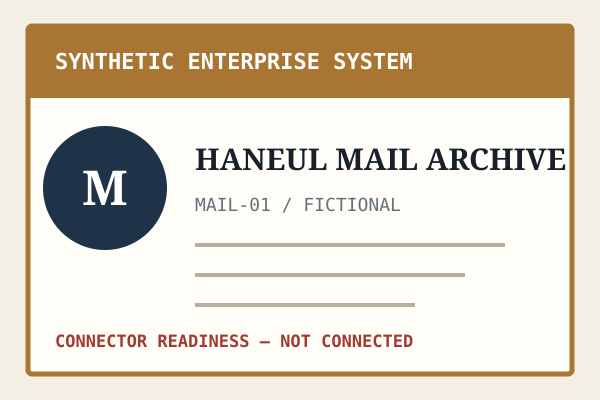
SYNTHETIC SYSTEMHaneul Mail Archivemetadata candidate only
요청을 연결로 바꾸지 않습니다. 데이터 소유자가 승인한 최소 범위와 제외 조건을 먼저 문서화합니다.
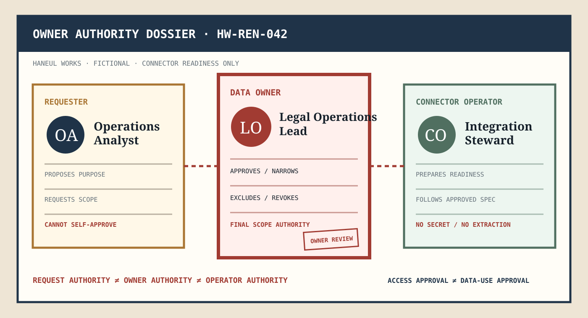

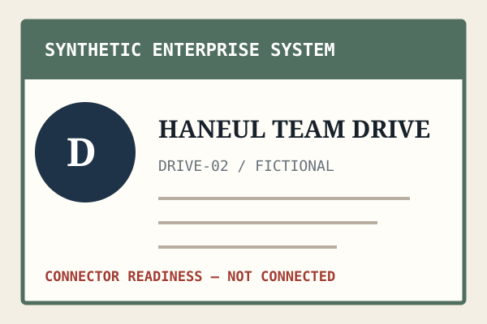
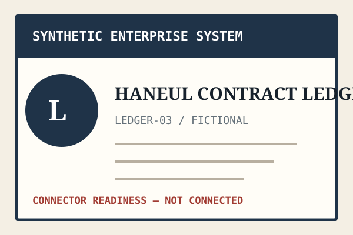
모션 준비됨
목적, 요청자, 데이터 소유자, 운영자와 산출물을 분리해 검토합니다.
목적과 필요 범위를 제안합니다.
최소 접근 범위와 제외 조건을 결정합니다.
승인된 명세만 기술적으로 준비합니다.
metadata permission과 content permission을 별도로 판정하고 금지 경로는 승인 영역 밖에 남깁니다.
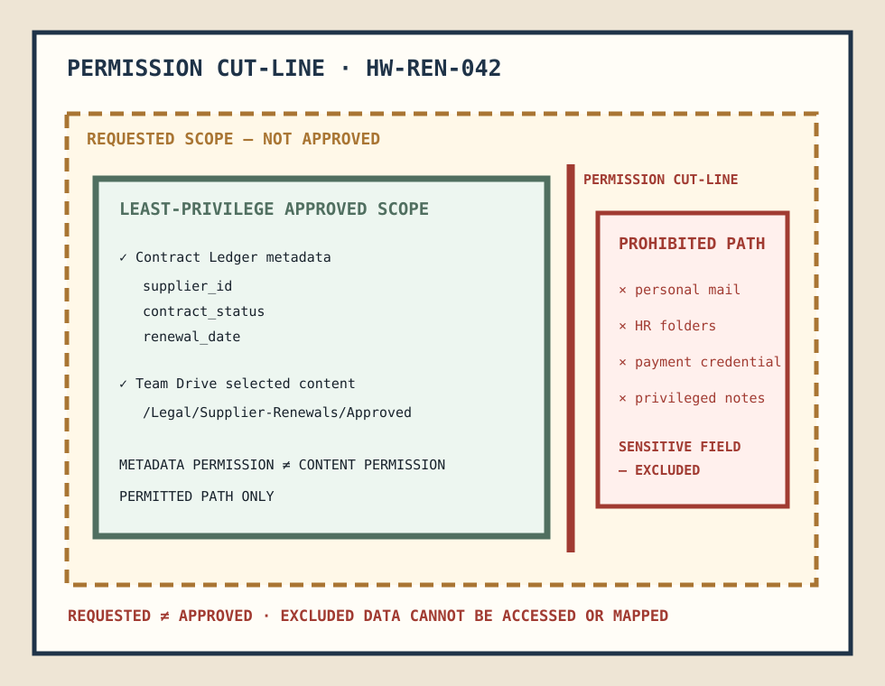
제외된 값은 빈칸이 아니라 명시적인 금지 기록으로 남습니다.
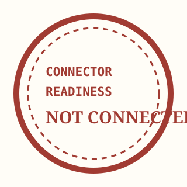
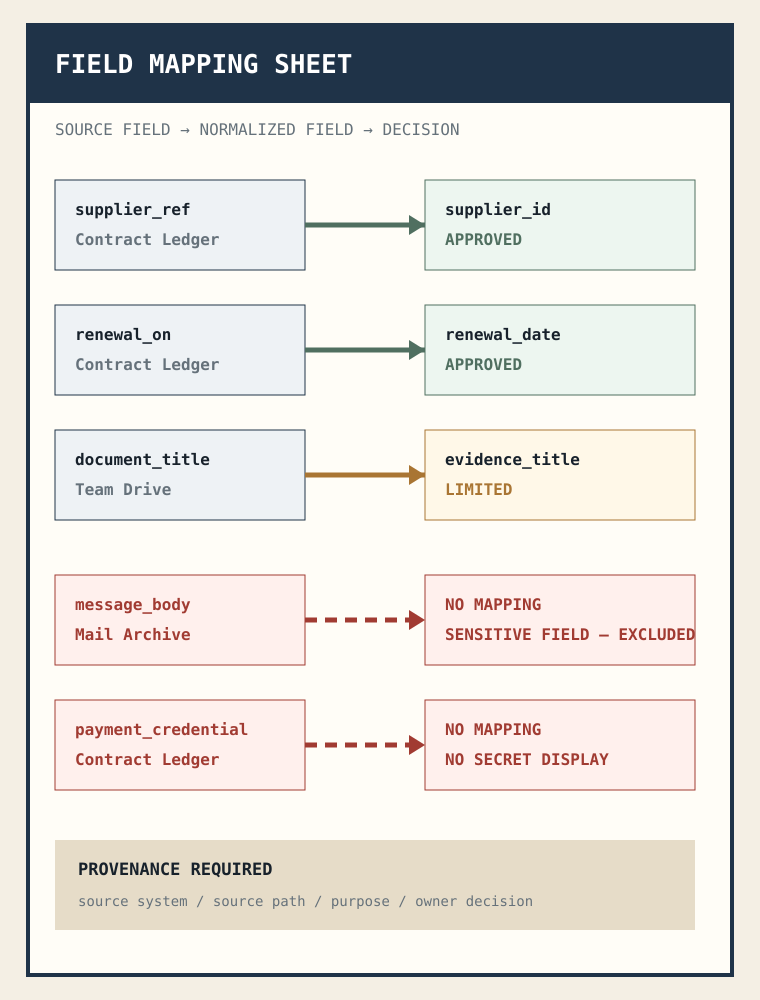
| SOURCE SYSTEM | SOURCE FIELD | NORMALIZED FIELD | DECISION |
|---|---|---|---|
| Contract Ledger | supplier_ref | supplier_id | APPROVED |
| Contract Ledger | renewal_on | renewal_date | APPROVED |
| Team Drive | document_title | evidence_title | LIMITED |
| Mail Archive | message_body | — | SENSITIVE FIELD — EXCLUDED |
| Contract Ledger | payment_credential | — | NO SECRET DISPLAY |
credential reference, retention, deletion, audit evidence, incident handoff를 범위와 같은 무게로 둡니다.
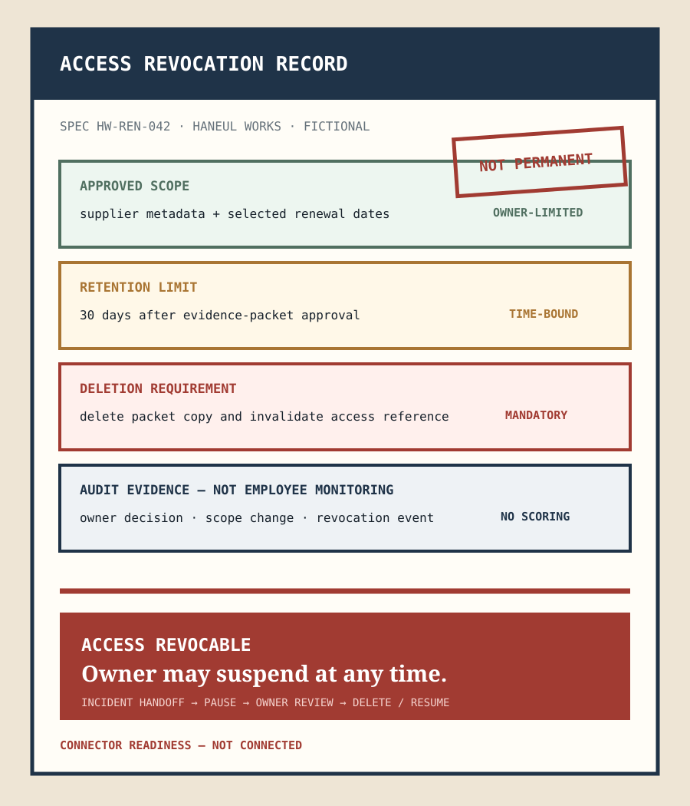
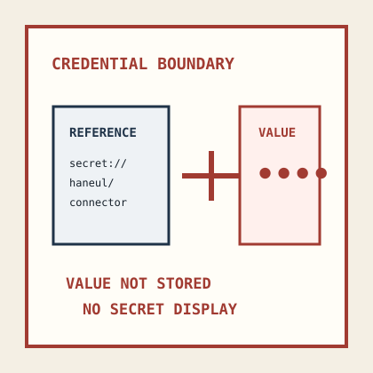
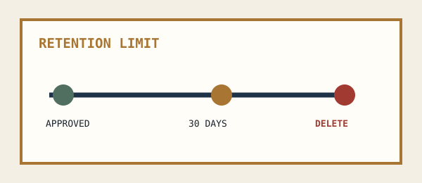
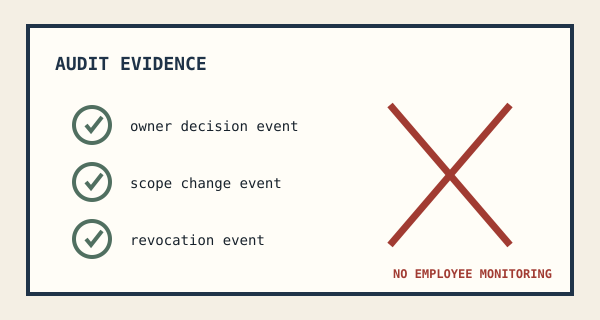
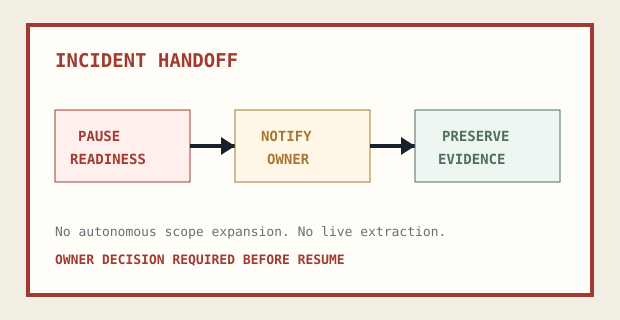
실제 연결, 추출, 자유로운 2차 사용이나 모델 학습은 승인되지 않았습니다.
DATA OWNERLegal Operations Lead
REQUESTEROperations Analyst
CONNECTOR OPERATORIntegration Steward
금지·보관·철회 조건을 접힘 영역으로 보내지 않습니다.
요청자보다 데이터 소유자 권한을 먼저 표시합니다.
금지 경로와 민감 필드를 숨기지 않습니다.
보관과 철회가 핵심 정보로 남습니다.